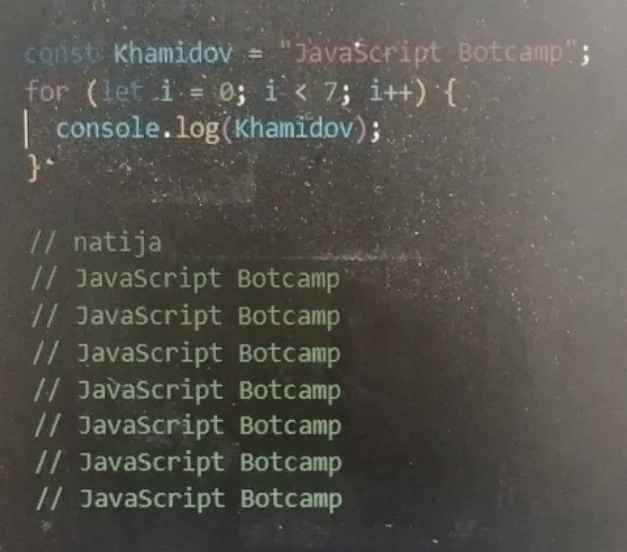
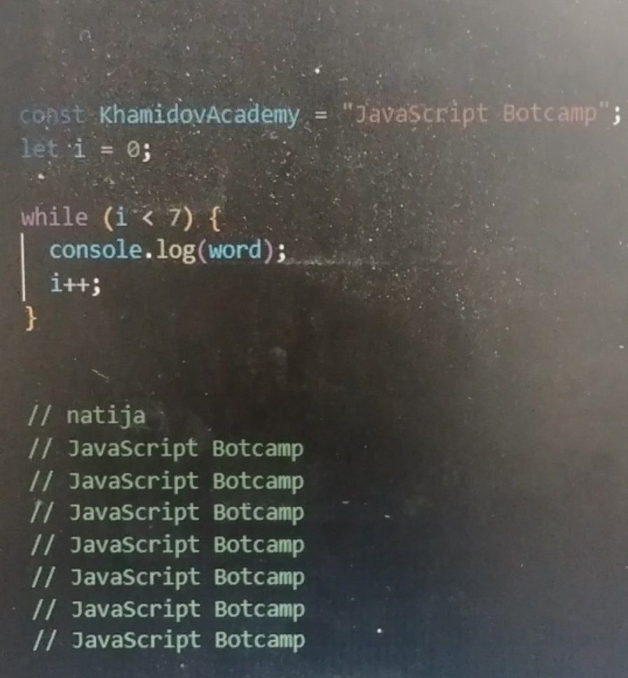
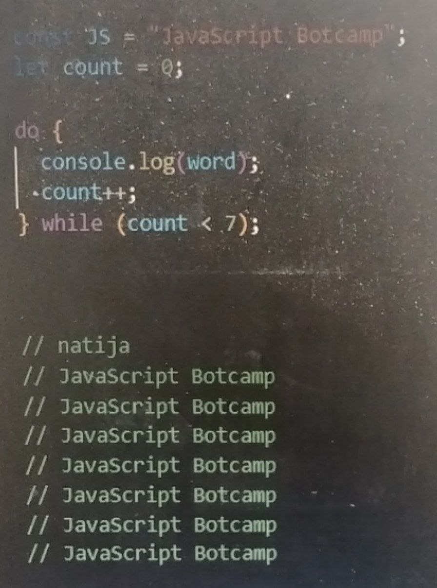

JavaScript
-
Loop function (For, While, Do While)
loop funksiyalar asosan bizga kerakli bolgan kodlarni qayta qayta yozmasdan osha kodni ishlatishimiz uchun kerak boladi. JavaScriptda 3 xil loop funksiya bor. (for , while , do while )
For

While

Do While

-
Amaliyot (For)
-
for tsiklidan foydalanib, 1 dan 10 gacha bo'lgan sonlarni konsolga chiqaring.
-
for tsiklidan foydalanib, 1 dan 20 gacha bo'lgan juft sonlarni konsolga chiqaring.
-
for tsiklidan foydalanib, "Salom, Dasturchi!" matnini 5 marta konsolga chiqaring.
-
const massiv = [10, 20, 30, 40, 50]; Quyidagi massiv elementlarini for yordamida konsolga chiqaring:
-
for yordamida 10 dan 1 gacha bo'lgan sonlarni teskari tartibda konsolga chiqaring.
-
for tsiklidan foydalanib, Fibonacci sonlari qatorining dastlabki 10 ta elementini konsolga chiqaring. Fibonacci qatori: har bir son oldingi ikki sondan yig'indisiga teng. (0,1,1,2,3,5,8,12,21,34...)
-
for tsiklidan foydalanib, 1 dan 50 gacha bo'lgan murakkab sonlarni konsolga chiqaring. (Murakkab sonlar — faqat 1 va o'zidan boshqa sonlarga bo'linadigan sonlar.)
-
Berilgan matn ichidagi har bir harfning nechta ekanligini hisoblab, natijani konsolga chiqaring.
-
Faqat for tsiklidan foydalanib, foydalanuvchi kiritgan sonning barcha raqamlarini qo'shing. Misol: Kiritilgan son: 12345 Natija: 15 (1 + 2 + 3 + 4 + 5)
-
1 dan 10,000 gacha bo'lgan palindrom sonlarni konsolga chiqaring. Palindrom sonlar — chapdan ham, o'ngdan ham bir xil o'qiladigan sonlardir. Misol: 121, 1221, 3443.
-
-
Amaliyot (While)
-
10 dan 1 gacha juft sonlarni chiqaring.
-
Foydalanuvchidan 1 dan 10 gacha bo'lgan son kiritishni talab qiling. Faqat shu oralig'dagi son kiritilsa, sikl to'xtasin. prompt va allertdan foydalaning.
-
Foydalanuvchi kiritgan sonni teskari o'girib chiqaring. Misol: Kiritilgan son: 12345 Natija: 54321
-
Ikki sonning eng katta umumiy bo'luvchisini (EKUB) while tsikli yordamida toping. Misol: Kiritilgan sonlar: 36, 60 Natija: 12
-
Foydalanuvchi paswordni togri yozmagincha qayta sorang. prompt va alertdan foydalaning.
-
Foydalanuvchidan sonlarni kiritishni so'rang va har safar kiritilgan sonni yig'indiga qo'shib boring. Foydalanuvchi 0 kiritganda tsikl to'xtasin va yakuniy yig'indini chiqaring. misol; Son kiriting: 5 Son kiriting: 3 Son kiriting: 10 Son kiriting: 0 Yig'indi: 18
-
Foydalanuvchidan parol kiritishni so'rang va u to'g'ri bo'lmaguncha tsiklni davom ettiring. Parol to'g'ri kiritilganda tsikl to'xtasin. misol; Parolni kiriting: 12345 Xato parol, qaytadan kiriting! Parolni kiriting: admin Xato parol, qaytadan kiriting! Parolni kiriting: password123 Parol kiritildi, tizimga kirildi!
-
Foydalanuvchidan pul yechish va pul qo'shish operatsiyalarini qabul qilib, balansni yangilang. Agar foydalanuvchi balansdan ortiqcha yechish istasa, uni ogohlantiring va operatsiyani davom ettiring. misol; Balans: 1000 Pul kiriting (Qo'shish/Yeish): +500 Yangilangan balans: 1500 Pul kiriting (Qo'shish/Yeish): -200 Yangilangan balans: 1300 Pul kiriting (Qo'shish/Yeish): -1500 Xato! Balansdan ko'proq yechib bo'lmaydi. Yangilangan balans: 1300
-
Foydalanuvchidan oylik xarajatlarni kiritishni so'rang va jami xarajatni hisoblang. Har safar yangi xarajatni qo'shish uchun tsiklni davom ettiring, foydalanuvchi 0 kiritganda tsikl to'xtasin. misol ; Xarajatni kiriting: 200 Xarajatni kiriting: 300 Xarajatni kiriting: 50 Xarajatni kiriting: 0 Jami xarajatlar: 550
-
Foydalanuvchidan buyurtmalarni qabul qilishni so'rang va ular bilan shug'ullaning. Har safar yangi buyurtma kiritilganda, jami buyurtmalarni yangilab boring. Foydalanuvchi 0 kiritganda buyurtma qabul qilishni to'xtating. misol; Buyurtma miqdorini kiriting: 3 Jami buyurtmalar: 3 Buyurtma miqdorini kiriting: 2 Jami buyurtmalar: 5 Buyurtma miqdorini kiriting: 0 Jami buyurtmalar yakunlandi: 5
Amaliyot (Do While)
-
Foydalanuvchidan "Ha" yoki "Yo'q" deb javob berishini so'rang. Agar foydalanuvchi boshqa so'z kiritsa, tsiklni davom ettiring va to'g'ri javob olmaguncha so'rovni qayta so'rang. Misol: Iltimos, "Ha" yoki "Yo'q" deb javob bering: Maybe Xato, "Ha" yoki "Yo'q" deb javob bering: Yo'q
-
Foydalanuvchidan biror so'zni kiritishni so'rang. Foydalanuvchi "JavaScript" so'zini kiritmaguncha, tsiklni davom ettiring va kiritilgan so'zni konsolga chiqaring. So'z kiriting: Hello So'z kiriting: World So'z kiriting: JavaScript Tizimdan chiqish.
-
Foydalanuvchidan har oy uchun xarajatlarini so'rang va jami xarajatlarni hisoblang. Foydalanuvchi 0 kiritganda, hisoblashni yakunlang. misol : Xarajatni kiriting: 100 Xarajatni kiriting: 200 Xarajatni kiriting: 0 Jami xarajatlar: 300
-
Foydalanuvchidan kredit summasi va to'lov muddatini kiritishni so'rang. To'lovni amalga oshirishda foizni hisobga olib, har bir oylik to'lovni aniqlang. Agar foydalanuvchi noto'g'ri ma'lumot kiritsa (masalan, salbiy son yoki noto'g'ri muddat), tsiklni qayta ishlating. Kredit summasi (masalan, 10000 so'm) Foiz stavkasi (masalan, 15%) To'lov muddatini (yil) kiritish (masalan, 5 yil) Misol: Kredit summasini kiriting (so'm): 10000 To'lov muddatini kiriting (yil): 5 Har oylik to'lov: 2500 so'm
-
Foydalanuvchidan mijozlar ro'yxatiga yangi mijoz qo'shishni so'rang. Foydalanuvchi "stop" so'zi kiritguncha, yangi mijozni qo'shishni davom ettiring. Har bir yangi mijozni ro'yxatga qo'shganda, ularning ma'lumotlarini konsolga chiqaring. Misol: Yangi mijozning ismini kiriting: Bekzod Yangi mijozning ismini kiriting: Shoxrux Yangi mijozning ismini kiriting: stop Mijozlar ro'yxati: 1. Bekzod 2. Shoxrux
Uyga Vazifa
-
Minimumni topish Foydalanuvchidan uchta son kiritishni so'rang va ulardan eng kichigini aniqlang.
-
Takrorlangan sonlar Foydalanuvchidan son kiritishni so'rang va shu sonning raqamlarini takroran chiqarish.
-
Fibonachchi ketma-ketligi "for" yordamida Fibonachchi ketma-ketligini 10 ta son uchun hisoblang
-
Berilgan matn ichida unli harflar (a, e, i, o, u) sonini hisoblang va konsolga chiqaring. Misol matn: "JavaScriptda Khamidov Academyda Botcamp shaklida organ !" Natija: 13 (Bu matnda 13 ta unli harf bor.)
-
Foydalanuvchi ismi va oilasi
Foydalanuvchidan ismi va familiyasini so'rang. Agar ismi va familiyasi bir xil bo'lsa, "Ism va familiya bir xil", aks holda "Har xil" deb chiqaring. -
Hisoblash mashinasi
Foydalanuvchidan ikkita son va amal (+, -, *, /) tanlashi so'rang. Tanlangan amalga qarab natijani chiqaring. -
Har bir uchta raqam uchun ayirish
Foydalanuvchidan uch xonali son kiritishni so'rang va har bir raqamini alohida chiqarib, yig'indisini hisoblang. -
Faqat juft raqamlarni chiqarish
Foydalanuvchidan uch xonali son kiritishni so'rang. Sonning faqat juft raqamlarini ekranga chiqaring. -
Darajaga ko'tarish
Foydalanuvchidan ikkita son kiritishni so'rang va birinchi sonni ikkinchi son darajasiga ko'taring. -
"Pascal uchburchagi"ni yaratish
Vazifa: for tsiklidan foydalanib, Pascal uchburchagining dastlabki 5 qatlamini konsolga chiqaring. Pascal uchburchagi: Har bir element o'zining tepasidagi ikki elementning yig'indisi hisoblanadi. -
Sonning faktorialini topish
Foydalanuvchidan son kiritishni so'rang va uning faktorialini hisoblang -
Foydalanuvchidan raqam va harflardan iborat matn kiritishni so'rang. Matndan faqat raqamlarni ajratib chiqaring
-
Raqamlar va raqamlar soni
Foydalanuvchidan son kiritishni so'rang. Shu sonning raqamlari va ularning sonini ekranga chiqaring. -
Ayirish qoidasi
Foydalanuvchidan son kiritishni so'rang va har bir raqamini oldingi raqam bilan ayiring (masalan, 543 -> 5-4, 4-3). -
. N soni bilan n yulduz
Foydalanuvchidan son kiritishni so'rang va shu sonning qiymatiga teng yulduzlar (*) chiqaruvchi kod yozing. -
Juft va toq faktoriallar
Juft va toq faktoriallarni hisoblab chiqaring. -
Ikki sonlar orasidagi farq
Foydalanuvchidan ikkita son kiritishni so'rang va ularning farqini aniqlang. -
Katta va kichik sonlarni toping
Foydalanuvchidan beshta son kiritishni so'rang. Ushbu sonlar orasidan eng kattasini va eng kichigini toping -
Matnda so'zlarni ajratish
Foydalanuvchidan matn kiritishni so'rang va undagi so'zlarni ajratib, har bir so'zni yangi qatorga chiqaring. -
Kvadrat ildiz topish
Foydalanuvchidan son kiritishni so'rang va uning kvadrat ildizini hisoblang. -
Faqat musbat raqamlarni chiqarish
Foydalanuvchidan raqamlar kiritishini so'rang (qator qilib). Qatordagi faqat musbat raqamlarni ajratib chiqaring. -
Raqamlarni kvadratga ko'tarish
1 dan 10 gacha bo'lgan sonlarni kvadratga ko'tarib chiqaring. -
Ikki sonning EBOB va EKUK
Foydalanuvchidan ikkita son kiritishni so'rang va ularning eng katta umumiy bo'luvchisini (EBOB) va eng kichik umumiy ko'paytuvchisini (EKUK) aniqlang. -
Teskari matn
Foydalanuvchidan matn kiritishni so'rang va uni teskari chiqaruvchi dastur yozing. -
Matndan raqamlarni ajratish
Foydalanuvchidan matn kiritishni so'rang va undagi faqat raqamlarni ajratib chiqaring. -
Raqamlar orasidagi eng katta farq
Foydalanuvchidan qator raqamlar kiritishni so'rang va ularning orasidagi eng katta farqni aniqlang. -
Murakkab matematik amallar
Foydalanuvchidan murakkab matematik ifodani kiritishni so'rang va uni hisoblaydigan dastur yozing. -
Raqamlarning o'rnini almashtirish
Foydalanuvchidan ikki xonali son kiritishni so'rang va raqamlarini o'rnini almashtiring. -
Alohida sonlar yig'indisi
Foydalanuvchidan matn ichida kiritilgan sonlarni ajratib, ularning yig'indisini hisoblang. -
Foydalanuvchining to'g'ri son kiritishi
Foydalanuvchidan son kiritishni so'rang va noto'g'ri son kiritsa, to'g'ri kiritmaguncha takrorlating. -
Ikki sonning ko'paytmasi
Ikki sonni foydalanuvchi tomonidan kiritilgancha ko'paytiradigan dastur yozing. -
Foydalanuvchi loginini tekshirish
Foydalanuvchidan login va parol so'rang va ularni tekshirib, to'g'ri bo'lsa "Kirish muvaffaqiyatli", aks holda "Noto'g'ri login yoki parol" chiqaring. -
Foydalanuvchi tomonidan taxmin
Foydalanuvchidan sonni taxmin qilishni so'rang va noto'g'ri bo'lsa, yana urinib ko'rishga undang. -
Foydalanuvchi tomonidan xato kiritish
Foydalanuvchidan noto'g'ri qiymat kiritganida, to'g'risini qayta kiritishini so'rang. -
Qatordagi elementlarning farqi
Foydalanuvchi tomonidan kiritilgan sonlar qatoridagi elementlar orasidagi farqni hisoblang. -
Sonlarni tahlil qilish
Foydalanuvchi kiritgan sonni tahlil qiling: toq, juft, musbat, manfiy va bir xil bo'lishi mumkinligini aniqlang.
-